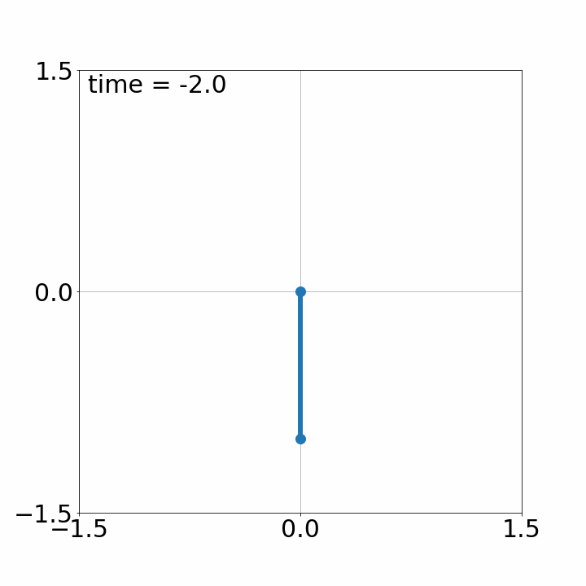
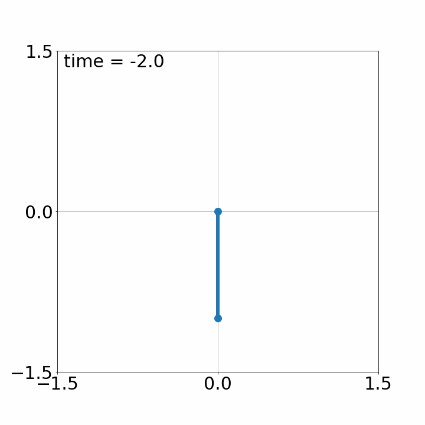

研究紹介
情報科学，制御工学，バイオの接点でおもろい研究を目指します．
魚の制御

魚を制御します．
スライド
参考文献
| [1] | M. Ogura and N. Wakamiya, “Model predictive control of fish schooling model with reduced-order prediction model,” in 60th IEEE Conference on Decision and Control, 2021, pp. 4115-4120. |
シェパーディング

移動する複数のエージェントを，外部から制御可能な少数のエージェントで斥力を用いて 間接的に移動を制御し目的地に誘導する問題は，牧羊犬の羊追い行動から shepherding 問題 と呼ばれます．現実の場面ではエージェント群の振る舞いが一様であることはなく，むしろ不 均質（ヘテロ）な場合が少なくありません．しかしながら，そのような不均一性を状況を想定したアルゴリズ ムはあまり提案されていないのが現状です．そこで我々のグループでは不均質なエージェント群の shepherding 問題を研究しています．
従来手法の 1 つである farthest-agent targeting 法では対処できないようなエージェント群を誘導するアルゴリズムを提案しました．以下にアルゴリズムの動作の様子を示します．
提案した Shepherding アルゴリズム
（参考）Farthest Agent Targeting 法
スライド
参考文献
| [2] | R. Himo, M. Ogura, and N. Wakamiya, “Iterative algorithm for shepherding unresponsive sheep,” Mathematical Biosciences and Engineering, vol. 19, no. 4, pp. 3509-3525, 2022. [ DOI | http ] |
| [1] | R. Himo, M. Ogura, and N. Wakamiya, “Shepherding algorithm for agents with heterogeneous sensitivities,” in 4th International Symposium on Swarm Behavior and Bio-Inspired Robotics 2021, 2021. |
モデルベース制御 × 深層展開（電気通信普及財団，CREST）

無線通信分野で近年活用されている深層展開の技術を用いたモデルベース制御系設計の研究を進めています．既存の理論では扱いが難しい非線形制御系の設計に対する有効性を確認しています．
以下に，デモンストレーションとして倒立振子の振り上げに提案手法を適用した様子を紹介します．様々な外乱に対する応答から誤差逆伝播を使ってオープンループ制御入力を学習します．学習の目標は，時刻t=5で振子を倒立した状態にさせることです．問題を難しくするために，振子の動きに対して適度な外乱が存在する状況を考えます．
学習前の様子です．制御入力を模索しています．


 

学習後の様子です．時刻t=5において振子を（だいたい）直立させることができています．
この手法の様々なシステムへの拡張，適用をしてみたい学生を募集しています．
スライド
参考文献
| [2] | K. Kobayashi, M. Ogura, T. Kobayashi, and K. Sugimoto, “Deep unfolding-based output feedback control design for linear systems with input saturation,” in SICE International Symposium on Control Systems 2021, 2021, pp. 33-39. [ DOI | arXiv | http ] |
| [1] | M. Kishida*, M. Ogura*, Y. Yoshida, and T. Wadayama, “Deep learning-based average consensus,” IEEE Access, vol. 8, pp. 142404 - 142412, 2020. (*equal contribution) [ DOI | arXiv | http ] |
社会的ネットワークにおける感染症制御（科研費若手研究）

インフルエンザは毎年冬に流行します．学級閉鎖が頻繁に起こります．今年（2018年）の1月22日から28日の間だけでも，日本全体で約1万件の学年閉鎖・学級閉鎖がありました．我々の研究グループでは，学級閉鎖やそれを一般化した社会距離戦略の有効性を検証しています．特に，適応的に変化するネットワーク上の感染症のダイナミクスの理解およびその最適な制御手法の開発を目標としています．SISモデルやSIRモデル（下図）のような感染症伝播モデルを用いて研究を行います．

参考文献
| [2] | K. Hashimoto, Y. Onoue, M. Ogura, and T. Ushio, “Event-triggered control for mitigating SIS spreading processes,” Annual Reviews in Control, vol. 52, pp. 479-494, 2021. [ DOI | arXiv | http ] |
| [1] | M. Ogura and V. M. Preciado, “Stability of spreading processes over time-varying large-scale networks,” IEEE Transactions on Network Science and Engineering, vol. 3, no. 1, pp. 44-57, 2016. Runner-up of 2019 IEEE TNSE Best Paper Award. [ DOI | arXiv | http ] |
非負システム（NII公募型共同研究）

非負の値をもつ入力に対する応答が非負性を示すような動的システムは非負システムと呼ばれます．薬理学， 疫学，生物学，通信ネットワークなど幅広い応用をもちます．この研究では，従来用いられてきた線形計画ではなく，幾何計画と呼ばれる広いクラスの最適化手法を用いた非負システムの設計に取り組んでいます．
参考文献
| [2] | M. Ogura, M. Kishida, and J. Lam, “Geometric programming for optimal positive linear systems,” IEEE Transactions on Automatic Control, vol. 65, no. 11, pp. 4648-4663, 2020. [ DOI | arXiv | http ] |
| [1] | C. Zhao, M. Ogura, and K. Sugimoto, “Stability optimization of positive semi-Markov jump linear systems via convex optimization,” SICE Journal of Control, Measurement, and System Integration, vol. 13, no. 5, pp. 233-239, 2020. [ DOI | arXiv | http ] |
制御工学 × 設計工学（NII公募型共同研究）

製品開発の過程を動的システムによりモデリングします．モデルに対して制御理論の方法論，とくに非負システム理論を適用することで，限られた人的・物的資源を製品開発のネットワークにおいて最適に配置できるようにします．
Slides
参考文献
| [2] | C. Zhao, M. Ogura, M. Kishida, and A. Yassine, “Optimal resource allocation for dynamic product development process via convex optimization,” Research in Engineering Design, vol. 32, no. 1, pp. 71-90, 2021. [ DOI | arXiv | http ] |
| [1] | M. Ogura, J. Harada, M. Kishida, and A. Yassine, “Resource optimization of product development projects with time-varying dependency structure,” Research in Engineering Design, vol. 30, no. 3, pp. 435-452, 2019. [ DOI | arXiv | http ] |